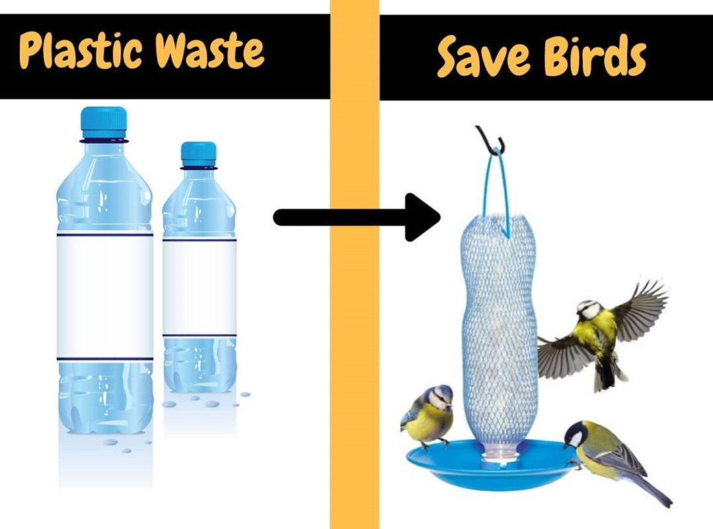

About Us
ANIMADRIVE

Welcome to Anima Drive India, whose motto is Animal welfare through various methods.
Anima Drive works for the welfare of animals. Our efforts so far has provided better place for stray
animals and the animals who requires our love and affection .
Our vision is a healthy and sustainable living of stray and needy animals living in harmony with
people.
Social Pathshala
(Current Project)
This is an initiative to make vessels for birds by school students. It is done in order to sow seeds
of empathy towards birds that in the time of lockdown is not getting adequate food and water for
their survival. Through this initiative we encourage the school students to take a step forward to
lend a helping hand.
This initiative emphasize :
How children need to be sensitive to the pain of animals and our environment and thus understands
how important is to maintain ecological balance.
Through this initiative we want to spread awareness among all the school students of India to treat
animals with care and save them thus understands how important is to appreciate the principles of
green living by caring for the environment.
We want to inculcate love and care towards the animals during this lock down thus inviting school
authorities to collaborate with us and build empathy towards animals among your students.
Our Welfare Projects
Protecting Cows

The love for all living creatures is the most noble attribute of man. Our efforts so far has
provided better place for stray animals and the animals who requires our love and affection...
Read
more
Selfie With Pets

During the ongoing corona pandemic there were rumors all around that the corona virus can also be...
Wildlife Webnar

Anima Drive organized a webinar session on 2nd May 2020 from 5 p. m to 6 p. m on -'Care for wild animals...